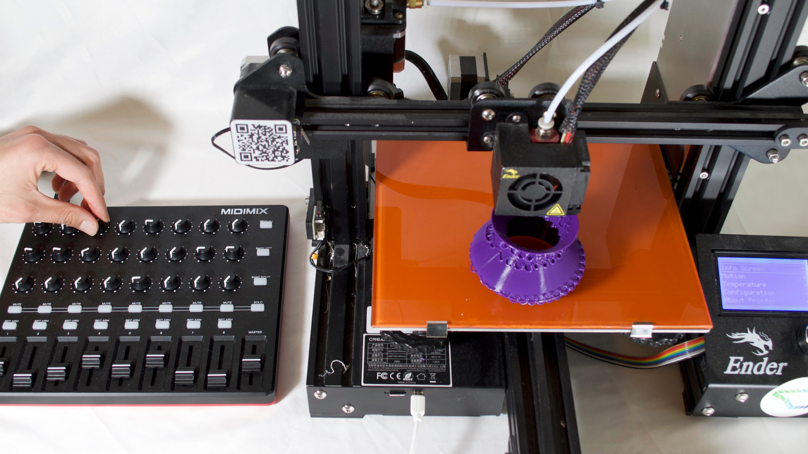
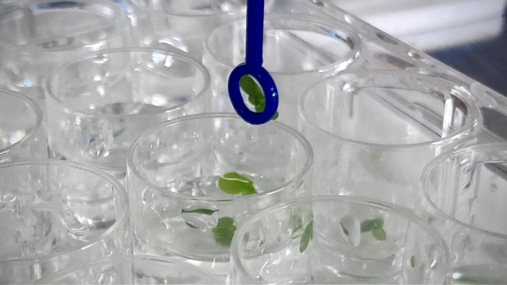
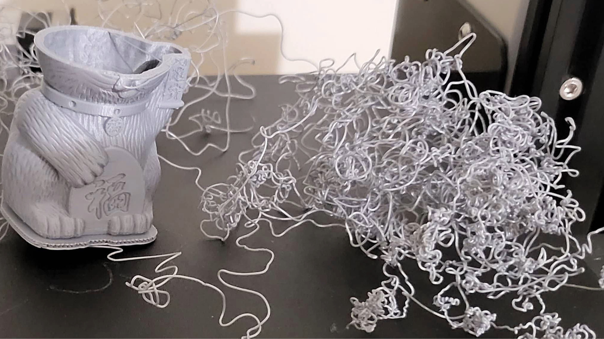
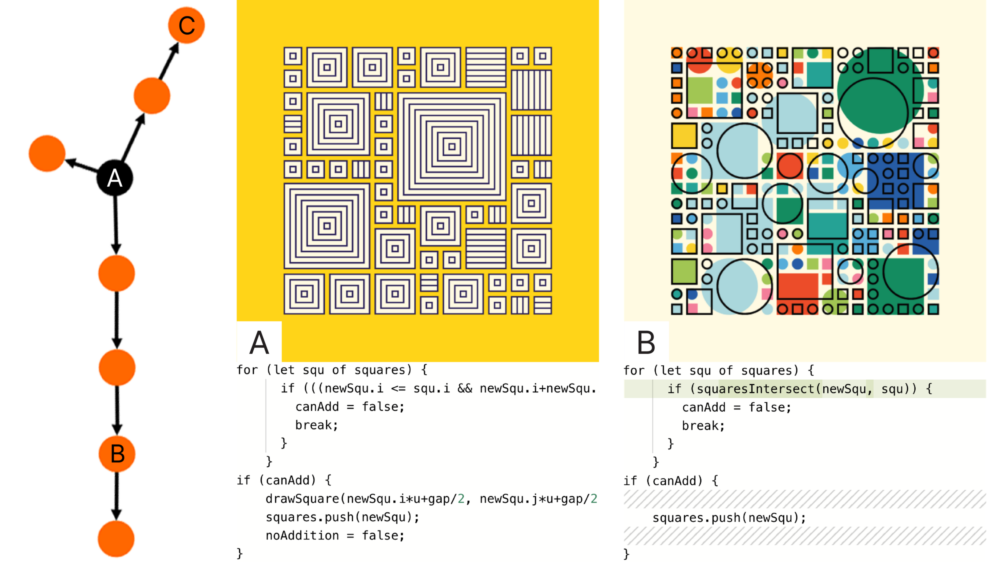

Selected Publications
See all publications here.



3D Printers Don’t Fix Themselves: How Maintenance is Part of Digital Fabrication
Studying how practitioners maintain their FFF 3D printers in the home and aruging that
maintenance is
core to our participants' printing practice.
ACM Conference on Designing Interactive Systems (DIS) 2023

Forking a Sketch: How the OpenProcessing Community Uses Remixing to Collect, Annotate, Tune, and
Extend Creative Code
A network and qualitative analysis of a large online creative coding community to understand
how artists reuse code.
ACM Conference on Designing Interactive Systems (DIS) 2023

p5.fab: Direct Control of Digital Fabrication Machines From a Creative Coding Environment
A system for controlling digital fabrication machines from the creative coding environment
p5.js, informed by insights into 3D printing practice.
ACM Conference on Designing Interactive Systems (DIS) 2022